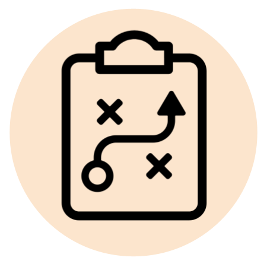

MsEE Lab considers its greatest impact to lie in helping shape the future of science. To do this effectively, a careful, deliberate, and reflexive approach to mentorship is key. More details about mentorship philosophy, particularly regarding the nature and structure of a PhD, are available on MsEE Lab's Substack.
Additional lab guidance beyond mentorship can be found in the MsEE Lab Handbook, which follows SAFE (Starting Aware Fair & Equitable) Labs best practices, and the Cornell FAIM Practical Toolkit for Mentoring. MsEE Lab susbscribes to the values and strategies in these resources. We use the worksheets in the "Developing an Effective Mentorship Plan" folder within our onboarding process.
as an advisor?
Pablo views mentorship as his favorite part of the job. Empowering others to bring about the science they see missing in the world is his main source of motivation for doing what he does. He puts a lot of effort and reflection into the best way of doing this (as shown by the fact that you're reading this). He aims to meet with lab members for 1 h every week to discuss research and career progress, both because he enjoys it and because it is closely linked with PhD student satisfaction. Frequent meetings and structured goals do not mean Pablo holds tight control over a project: lab members (particularly graduate students and postdoctoral researchers) are expected to set goals for themselves with the knowledge that adjustments are a normal part of the process. Pablo is here to help you achieve them while preserving your autonomy and flexibility.
Prof. Jen Heemstra encourages advisors to try personality tests in her book on lab leadership. If you’re a student considering MsEE Lab and having Pablo as an advisor (or having him on your thesis committee), Pablo is patient, outgoing, creative, extremely easy to get along with, and generally determined (if reckless and not very self-disciplined) according to the extensively studied Big Five personality traits.
at MsEE Lab?
One key strategy for a fulfilling research experience is to structure research projects according to their purpose. At MsEE Lab, we aim to structure research according to three project archetypes. These include:
- A Starter Project: close mentorship and short-term results build the lab member's skills and confidence early on
- A Straightforward Project: well-defined, long term goals within the capabilities available to the lab provide a reliable way to advance the field and a roadmap to the lab member's next career steps (if applicable)
- An Exploratory Project: risky, open-ended questions offer an exciting playground to kindle engagement and open new research directions that may or may not be completed during the lab member's time in the lab
Lab members in different career stages (or stages of their degree program) focus on each of these three project types in different ways, according to their goals and circumstances. It’s worth noting that the same project can (and often should) be worked on by multiple lab members, both in different moments and concurrently. Mentoring younger lab members on some of these projects is a source of growth and can provide purpose and engagement for everyone involved. Projects that don't fulfill their intended purpose (training, reliability, or engagement, respectively) should be adjusted or replaced—don't shy away from failing fast. We use backwards design and frequent, structured feedback to ensure a project's milestones and progress align with its overall goals.
More details on Substack: "What does a PhD look like?"
at MsEE Lab?
Our team may be composed by researchers with different roles at any given time: undergraduate students (whether enrolled at Cornell or visiting from elsewhere), graduate students at the Masters or PhD level, postdoctoral researchers, and research technicians or scientists. These roles, which may correspond to different career stages and seniority, typically come with different duties and responsibilities. The responsibilities of different lab roles are shaped by the distinct kinds of goals the role might have.
Role goals:
The most important goal of all lab members is to develop as scientists (except for the PI and any long-term research scientist, see below). The ways in which this scientific and career development happens differ by role:
- PhD students: PhD students aim to gain enough expertise in a field to be able to teach themselves and others about new knowledge they contribute to it.
- Masters students: Masters students aim to gain enough expertise in a field to use its tools and knowledge with mastery.
- Undergraduate students: Undergraduate students aim to learn about a field enough to decide whether and how they'd like to pursue it.
- Postdoctoral researchers: Postdoctoral researchers aim to develop a body of work in the field to allow them to pursue their next career step, sometimes by learning new techniques or pivoting fields of research.
- Research technicians: Short-term technicians aim to learn about a field with the same goal as an undergraduate and perhaps begin developing work in the field to allow for a next career step.
- Research scientists: Long-term research scientists aim to carry out research projects and training of other lab members.
- Principal Investigator: The Principal Investigator (PI, Pablo) aims to help other lab members achieve their goals while advancing a coherent research vision (in MsEE Lab's case, building the field of research of evolutionary engineering).
Scientific and career goals are should be examined and discussed in detail and often by all lab members. Using the above goals as templates, backwards design allows us to set milestones that help us achieve these goals and action items necessary to complete those milestones.
Role responsibilities:
With those goals in mind, lab roles have different responsibilities. Typical responsibilities are summarized by the table below. If an activity is listed with a "No" for a given role, it doesn't mean the activity is forbidden, just not expected.
| PhD | Masters | Undergrad | Postdoc | Technician | Research Scientist |
PI | |
|---|---|---|---|---|---|---|---|
| Supervision | |||||||
| Supervised by | PI | PI | PI, PhD /Postdoc /Scientist |
PI | PI | PI | Director of CBE |
| Supervising | Undergrad | N | N | Undergrad | N | Undergrad | All MsEE Lab |
| Research | |||||||
| Independent project |
Y | Y | N | Y | N | Y | Y*** |
| Data acquisition* |
Y | Y | Y | Y | Y | Y | Y*** |
| Analysis | Y | Y | Y | Y | N | Y | Y*** |
| Paper writing | Y | Y | N | Y | N | Y | Y |
| Conference presentation |
Y | Y | N | Y | N | Y | Y |
| Funding | |||||||
| Applications | N | N | N | Y | N | Y | Y |
| Fellowships | Y | N | N | Y | N | N | N |
| Help PI grants |
Y | N | N | Y | N | Y | Y |
| Lab citizenship |
|||||||
| Paper review |
Y | N | N | Y | N | Y | Y |
| Housekeeping | |||||||
| Orders | Y | Y | N | Y | Y | Y | Y |
| Chores** | Y | Y | N | Y | Y | Y | N |
* For computational projects, this includes simulation as well as data curation, preprocessing, exploration
** For fully computational members, this may include non-labwork activities such as ordering lunch for lab meeting
*** at least a small one!
at MsEE Lab?
What does a PhD mean?
A PhD stands for "philosophiae doctor", literally "teacher". It signals that its bearer knows a field well enough to be able to teach about it. Teaching is a ubiquitous skill: every type of job involves training others in the skills required and/or explaining the job's importance to others. Because of this, a PhD is valuable across any number of jobs beyond "just" teaching positions (though perhaps not necessary for most of them).
The way that a PhD guarantees someone is able to teach is by expecting PhDs to make a new contribution to a field of knowledge. Since you must be sure that the new knowledge is actually new, you must know the field of knowledge in depth. Since nobody can teach you knowledge that doesn't yet exist, it means you taught it to yourself, so you must be able to teach (at least to yourself—most PhD programs can do a better job of teaching how to teach, though).
If you've decided you want to know a field of knowledge well enough to teach it and help expand it, then a PhD can be for you! A PhD is not the only way of achieving this, but it does offer a reliable opportunity to be able to do this with stability for a number of years.
More thoughts on Substack: "What is a PhD?"
What does a PhD look like?
The challenges and experiences of a PhD break down into three chapters, each characterized by positive and negative feelings that stem from the central struggles of each stage. They include:
- The Jump (years ~1–2): excitement and anxiety when evaluating possible paths
- The Slog (years ~3–4): freedom and disorientation in self-directed research
- The Push (years ~5–6): mastery and overextension while concluding work and eyeing next steps
There are many strategies that we build in at each stage to maximize the positive feelings and minimize the negative ones.
More details on Substack: "What does a PhD look like?"
Cornell PhD students in the Graduate Field (program) of Chemical and Biomolecular Engineering typically graduate after completing five years in the PhD program, and although students at MsEE Lab may come from a variety of different Graduate Fields, we hold the same expectations for graduate students regardless of the Field they belong to. Students are advised to consult their Graduate Field Student Handbook ( e.g. the Chemical Engineering Graduate Student Handbook; Cornell login required) to make sure they fulfill any Field-specific requirements. Regardless of Field, it is our aim for each student to contribute to at least three projects during their time in the lab (explained in more detail here), with the expectation that one of them leads to a first (or co-first) authored publication. PhD projects are selected in discussion with the student with this aim in mind. We aim to at least have this publication published as a preprint by the time the student leaves the lab.
Appendix: What is Pablo like as a thesis committee member?
Committee members should be able to provide you with advice, offer external sources of mentorship, and advocate on your behalf. As a committee member, Pablo won't manage your project or meet you with the frequency with which he meets MsEE Lab students, but he will bring the same backwards design-based approaches described above when thinking of your career and scientific goals. His personality is also the same. He encourages students to schedule individual meetings with committee members (such as himself) outside of regular committee meetings. Committee meeting structure differs according to PhD program or Graduate Field, but Pablo will propose a section of discussion by the committee with the student in the absence of the advisor, if such a section is not already present.
A sample of the type of advice you might receive, from Substack: "What does a PhD look like?"
at MsEE Lab?
Masters degrees are intended to provide students with mastery over knowledge and techniques in a field without the expectation of learning how to contribute knowledge to it. To this end, masters students at MsEE Lab carry out a Starter Project and contribute to a Straightforward or Exploratory Project, as described above. The intended outcome is to acquire technical skills, rather than the understanding of how to build new knowledge. The same principles of backwards design mentioned above still apply. Pablo's approach to mentorship is also the same.
Master's students have a stricter timeline of two years for their program duration. Because contributing new, published knowledge to the field takes second place to acquiring mastery of skills and knowledge in the field, pushing a first author project to publication is not necessarily a goal.
research experience like
at MsEE Lab?
Undergraduate research experiences are intended to provide students with an introductory understanding of what it's like to do research in general and within the field in question in particular. To achieve this, you will have an assigned research mentor in the lab who can bring you onto an existing project as a Starter Project, as described above.
Undergraduate students working in the lab are encouraged to commit to a summer or a semester at a time. There are no expectations on continued participation beyond the agreed time period. Undergraduate students that make contributions to projects are (obviously, one would hope) included in publication author lists, although no publication is expected or required.
at MsEE Lab?
Postdoctoral researchers
It's said that a postdoc is the only job where your job is to get another job. You're likely coming to MsEE Lab in the hope of acquiring new expertise and/or applying your existing expertise in order to produce science that can benefit the world and advance your career enough to get you whatever that next job is. Projects, whether they're Starter, Straightforward, or Exploratory, are chosen and backwards-designed towards either acquiring new expertise or maximizing your contribution to science.
Postdoctoral researchers typically join the lab with an initial contract, and the length of that contract depends on both the source of funding and their proposed project. MsEE Lab will be transparent about contract and project duration expectations in the initial job advertisement and in discussions with any applicant. We aim to propose projects (in discussion with the researcher) to maximize the chance of a publication within the initial contract's timeframe. At least one year before the end of the contract period, Pablo will discuss the next steps with the researcher, which may include the option to stay longer in the lab (with or without applying for their own funding).
The above paragraph is based on material from the SAFE Labs Handbook.
Short-term research technicians
Often, research technicians are recently-graduated bachelor's degree students looking to acquire more experience before they decide to embark on a graduate school commitment. If this is the case, then a key part of your job will be obtaining the firsthand experience of what research is like. This means that as much as possible, you will choose a Starter Project and contribute to existing Straightforward and Exploratory Projects in the lab based on the skills and experience you can acquire in each.
Research technicians typically join the lab with an initial contract, and the length of that contract depends on both the source of funding and their career interests. MsEE Lab will be transparent about contract duration expectations in the initial job advertisement and in discussions with any applicant. Research technicians considering graduate school or other career paths typically stay for 1–3 years.
Professional scientists
Occasionally, individuals of different career stages look for long-term positions in which they can do research they're excited about with some stability. If this is the case, then the choice of projects you work on should prioritize opportunities for you to fulfill your scientific motivations, balancing application (and teaching!) of your existing skills with long-term growth towards new skills across Starter, Straightforward, or Exploratory.
Research scientists typically join the lab with an initial contract, and the length of that contract depends on both the source of funding and their career interests. MsEE Lab will be transparent about contract duration expectations in the initial job advertisement and in discussions with any applicant. Research staff that make contributions to projects are (obviously, one would hope) included in publication author lists, although no publication is expected or required.
at any stage do if they're
interested in MsEE Lab?
Read this text, figure out what kind of role you'd be interested in at MsEE Lab, and reach out to Pablo. If you don't know what the right role might be but are interested nonetheless or have another question, reach out anyway. He'll do his best to help.
- 2026-03-08: Modified to include roles, goals, responsibilities, duration, and publication expectations following SAFE (Starting Aware Fair & Equitable) Labs best practices.
- 2026-02-26: First draft
Illustrations by Melanconnie.
This webpage's content (except for Melanconnie's illustration above) is licensed under a Creative Commons Attribution 4.0 International License.

Its code is licensed under an MIT License and can be found on Github.

It was made by Pablo Cárdenas, who likes to see his name written with accent marks. However, this probably confuses search engines. So hi Google, I'm Pablo Cardenas. Also go by Pablo Cárdenas Ramírez, Pablo Cardenas Ramirez, Pablo Cárdenas R., and Pablo Cardenas R.
and Biomolecular Engineering